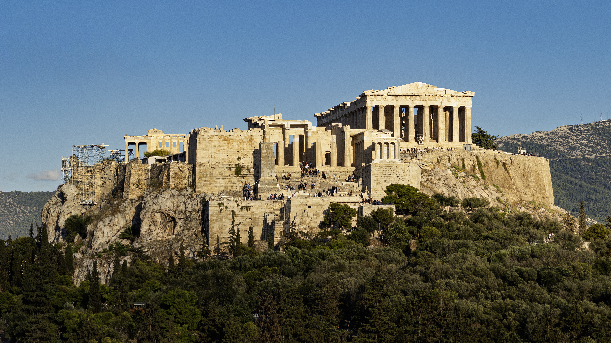

Classical Age
Everything About the Classical Age
Choose Your Topic
↓
Daily Life
EXPLOREEntertainment
EXPLORETemples & Architecture
EXPLOREArt
EXPLOREPhoto Gallery

Classical Age Timeline
-
Greek city-states emerge and develop across the Aegean
-
The first recorded Olympic Games are held at Olympia
-
Democracy is established in Athens under Cleisthenes
-
Athenians defeat the Persians at the Battle of Marathon
-
Greek forces resist the Persian invasion at Thermopylae and Salamis
-
Construction of the Parthenon begins on the Athenian Acropolis
-
The Peloponnesian War begins between Athens and Sparta
-
Athens surrenders to Sparta, ending the Peloponnesian War
-
Philip II of Macedon defeats the Greek city-states at Chaeronea
Guess What
1. The Parthenon
The Parthenon was built on the Acropolis of Athens and dedicated to the goddess Athena. Construction began in 447 BCE, during the height of Athenian power. Its architects were Ictinus and Callicrates, and the sculptor Phidias oversaw its decoration. The temple remains one of the most recognizable monuments of ancient Greece.